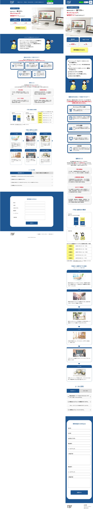
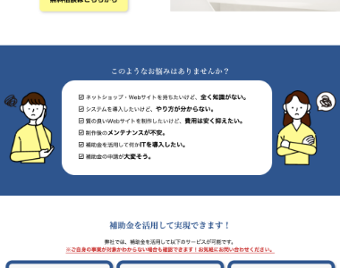
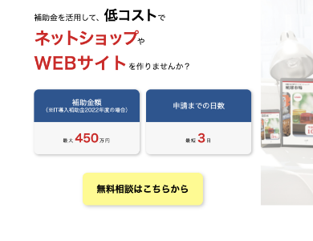

実務制作（在籍時の制作物を一部再構成・再デザイン）
IT補助金を活用したネットショップ制作 広告用LP

LP全体（スクロールできます）
Background
制作背景
- クライアント
- 沖縄県に実在するシステム開発・Web制作会社
- ターゲット
- IT補助金を活用して、Webサイトやネットショップの制作・リニューアルを検討している中小企業・小規模事業者
- 目的・狙い
-
- IIT補助金を活用するメリットや制作の流れを分かりやすく伝え、無料相談へのお問い合わせ獲得につなげること。
- 要望
-
- IT補助金を活用したECサイト制作等のサービス内容を分かりやすく伝え、中小企業・小規模事業者からの無料相談・お問い合わせにつながるランディングページを制作したい。
Concept
コンセプト
- 与えたいイメージ
- 信頼感・分かりやすさ・安心感
- フォント
- Hiragino Kaku Gothic,Hiragino Mincho
- カラー
-
信頼性と誠実性を表現するため、ブルーやイエローなど爽やかな色を使用した。
Point
ポイント
- ◾️情報を整理し、安心して相談できる構成
- IT補助金は制度が複雑で分かりにくいという印象を持たれやすいため、「補助金とは」「制作の流れ」「よくある質問」などの情報を順序立てて配置した。ユーザーが疑問を解消しながら読み進められる構成にすることで、安心して無料相談へ進める導線を意識した。
- ◾️CTAを目立たせ、お問い合わせにつながる導線
- 無料相談へのお問い合わせを促進するため、ファーストビューにCTAを配置するとともに、ページ下部にもお問い合わせフォームを設置した。また、CTAには視認性の高いイエローを使用し、ページ全体のブルーを基調とした配色の中に目を引くデザインを意識した。


Overview
概要
- 作業工程
- 企画／設計／ワイヤーフレーム作成／デザイン
- 使用ツール・言語
-
- XD（ワイヤーフレーム作成、デザイン）
- Photoshop、Illustrator（画像加工、トリミング）
- 制作期間
-
- ■ 1週間
- 企画：3日間
- 設計、デザイン：4日